Chapter 14 ggplot2 paketindeki grafikler
## [1] "geom_abline" "geom_area" "geom_bar"
## [4] "geom_bin_2d" "geom_bin2d" "geom_blank"
## [7] "geom_boxplot" "geom_col" "geom_contour"
## [10] "geom_contour_filled" "geom_count" "geom_crossbar"
## [13] "geom_curve" "geom_density" "geom_density_2d"
## [16] "geom_density_2d_filled" "geom_density2d" "geom_density2d_filled"
## [19] "geom_dotplot" "geom_errorbar" "geom_errorbarh"
## [22] "geom_freqpoly" "geom_function" "geom_hex"
## [25] "geom_histogram" "geom_hline" "geom_jitter"
## [28] "geom_label" "geom_line" "geom_linerange"
## [31] "geom_map" "geom_path" "geom_point"
## [34] "geom_pointrange" "geom_polygon" "geom_qq"
## [37] "geom_qq_line" "geom_quantile" "geom_raster"
## [40] "geom_rect" "geom_ribbon" "geom_rug"
## [43] "geom_segment" "geom_sf" "geom_sf_label"
## [46] "geom_sf_text" "geom_smooth" "geom_spoke"
## [49] "geom_step" "geom_text" "geom_tile"
## [52] "geom_violin" "geom_vline"14.1 Saçılım Grafiği
- Aşağıdaki kod sadece ilk katmanı oluşturur.
14.2 Saçılım Grafiği
- Katman eklenmesi
## `stat_bin()` using `bins = 30`. Pick better value with `binwidth`.
- Yüzey eklenmesi
## `stat_bin()` using `bins = 30`. Pick better value with `binwidth`.
14.3 Saçılım Grafiği
- Yüzey eklenmesi
## `stat_bin()` using `bins = 30`. Pick better value with `binwidth`.
14.4 Yüzeyler
facet_grid fonksiyonu ise hem tek hem de iki değişkenin panellerde gösterimi için
facet_grid(satırdeğişkeni~sütundeğişkeni)
facet_grid(satırdeğişkeni~.) veya
facet_grid(.~sütundeğişkeni)
14.5 Yüzeyler
- Yüzeyde kategorik değişkenlerin düzeylerini görebilmek için factor değişken olarak tanımlamak gerekir.
## `stat_bin()` using `bins = 30`. Pick better value with `binwidth`.
14.6 Yüzeyler
- Yüzeylerin sütunda oluşturulması

- Yüzeylerin satırlarda oluşturulması

14.7 Yüzeyler
## `stat_bin()` using `bins = 30`. Pick better value with `binwidth`.
## `stat_bin()` using `bins = 30`. Pick better value with `binwidth`.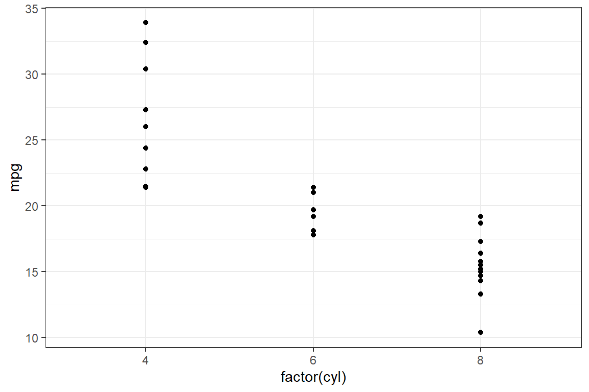
14.8 gruplama değişkenleri
- Renklendirme, sembol şekli, sembol büyüklüğü ve çizgi türü belirleyen fonksiyonlar yardımıyla gruplama yapılmaktadır.
14.9 color ile gruplandırma
- Açıklama kutucukları otomatik çıkar!
p1 <- ggplot(
PISA_OGR_2018 %>%
group_by(SINIF,CINSIYET) %>%
mutate(ort=mean(ODOKUMA1)) %>% ungroup(),
aes(x=SINIF, y=ort, color=CINSIYET )) +
geom_point() +
xlab("Sınıf Düzeyi")+
ylab("Ortalama Puan") 
14.10 color ile gruplandırma
ggplot(PISA_OGR_2018,aes(x=ODOKUMA1,y=OK_YETERLIK,color=CINSIYET)) + geom_point()+ facet_grid(.~SINIF) ## Warning: Removed 199 rows containing missing values (`geom_point()`).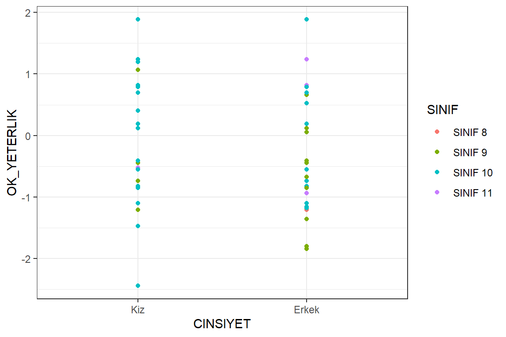
14.11 Grafik nesnesi
- Oluşturulan grafik p nesnesine atanmıştır. p nesnesine + ile katmanlar eklenebilir.
- Kategorik degişkenler eksen değerlerini belirler.

- cyl değişkenin sadece 4,6 ve 8 değerlerini eksende belirtmek için factor olarak tanımlamak gerekir.
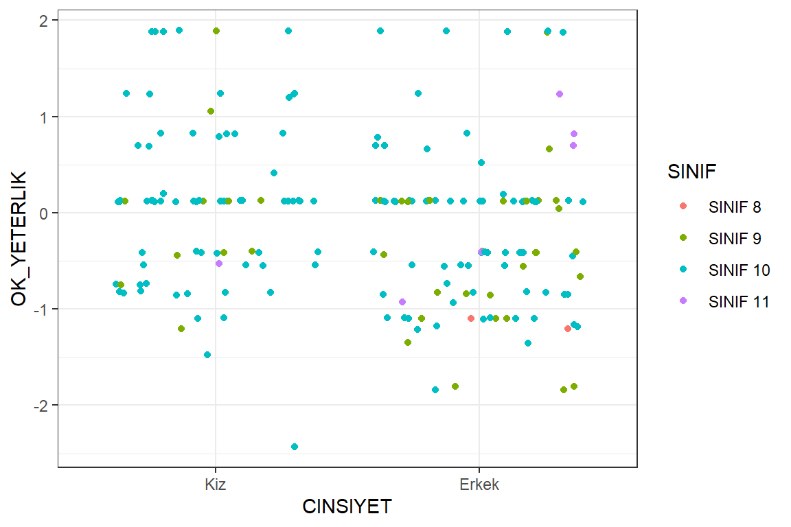
14.12 Grafikler üç bölümden oluşur

14.13 AESTHETICS
fill
color
size
shape
alpha
linetype
labels
color parametresi
## Warning: Removed 199 rows containing missing values (`geom_point()`).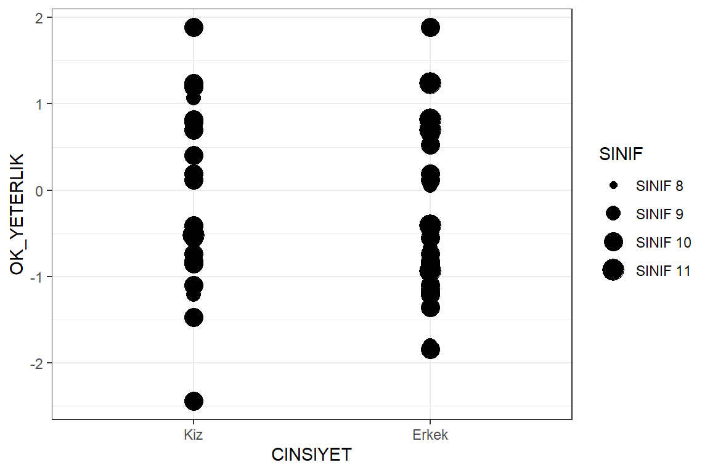
- size ve shape parametresi
her iki parametrenin de olağan değeri 1 dir.
## Warning: Removed 199 rows containing missing values (`geom_point()`).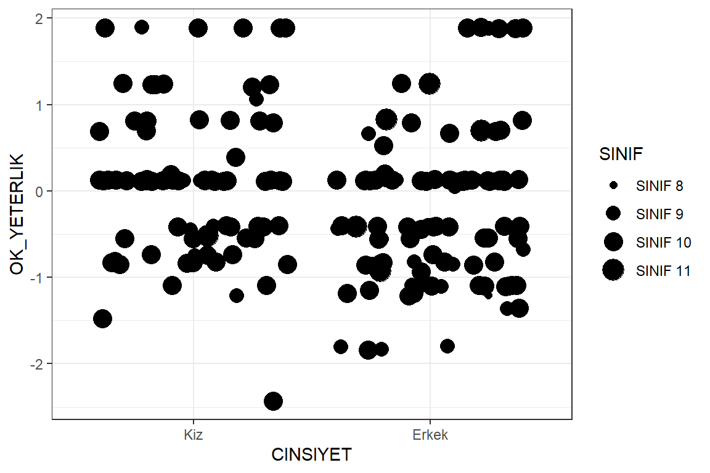
- Veri seti her bir okul türünden 5 kişi alınarak veri seti boyutu küçültülmüştür.
df <- PISA_OGR_2018 %>% group_by(OKUL_TUR)%>% sample_n(5) %>% ungroup()
ggplot(df, aes(CINSIYET, OK_YETERLIK, color = SINIF)) +
geom_point()## Warning: Removed 6 rows containing missing values (`geom_point()`).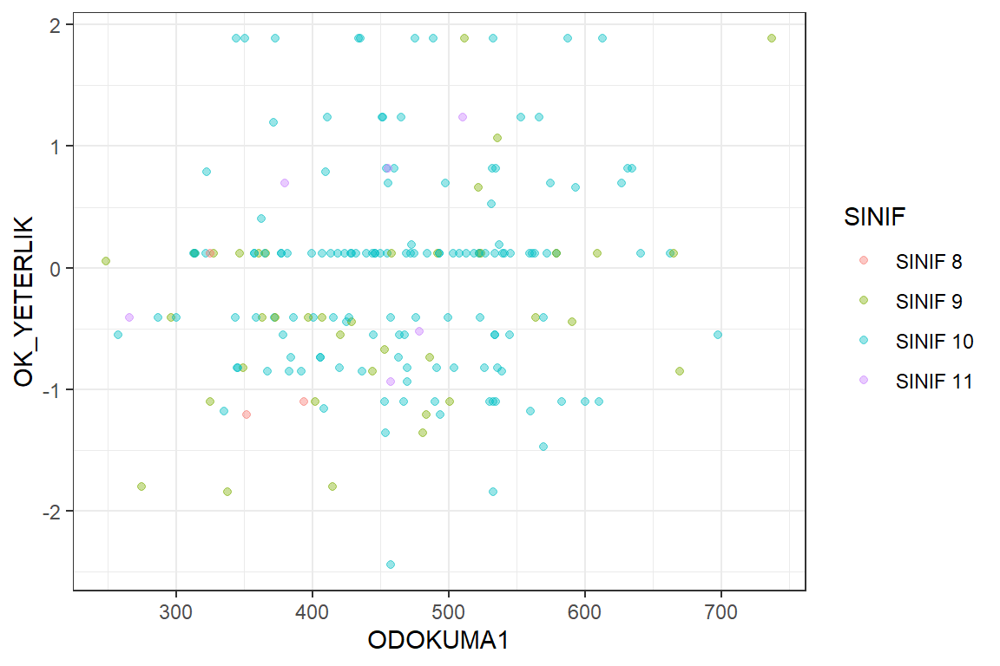
Üstüse gelen noktalar için position
identity
dodge
stack
fill
jitter
jitterdodge
nudge
## Warning: Removed 6 rows containing missing values (`geom_point()`).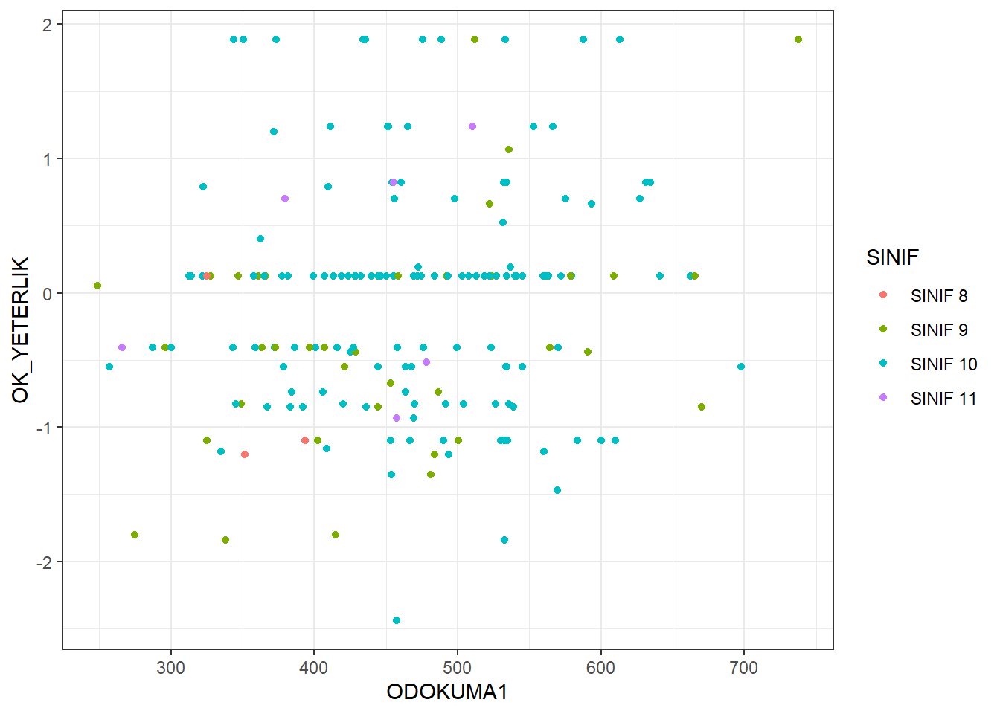
## Warning: Removed 6 rows containing missing values (`geom_point()`).
size parametresi
- parametreler için veri setinden bir değişken değeri seçilebilir.
## Warning: Using size for a discrete variable is not advised.## Warning: Removed 6 rows containing missing values (`geom_point()`).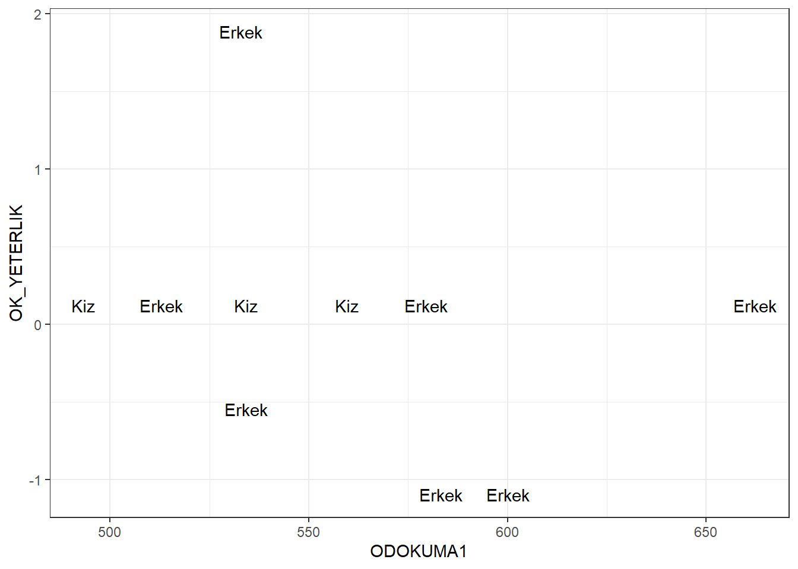
size parametresi
- üst üste binen noktaları kaydırarak ayırma
## Warning: Using size for a discrete variable is not advised.## Warning: Removed 6 rows containing missing values (`geom_point()`).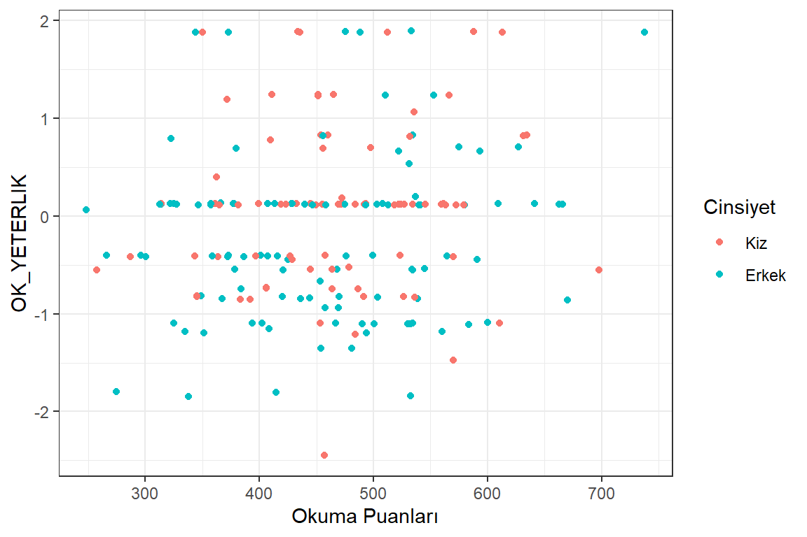
14.14 Katmanlar

14.15 alpha
- Şeffaflık düzeyi için alpa
## Warning: Removed 6 rows containing missing values (`geom_point()`).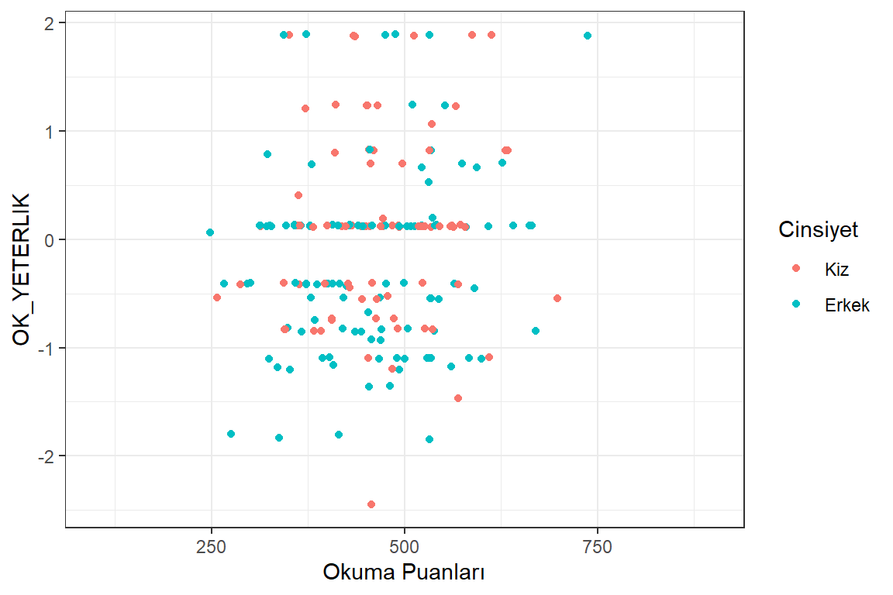
- Katmanları nesneye ekleme grafik1 adlı nesneye istenilen katmanlar eklenebilir.
## Warning: Removed 6 rows containing missing values (`geom_point()`).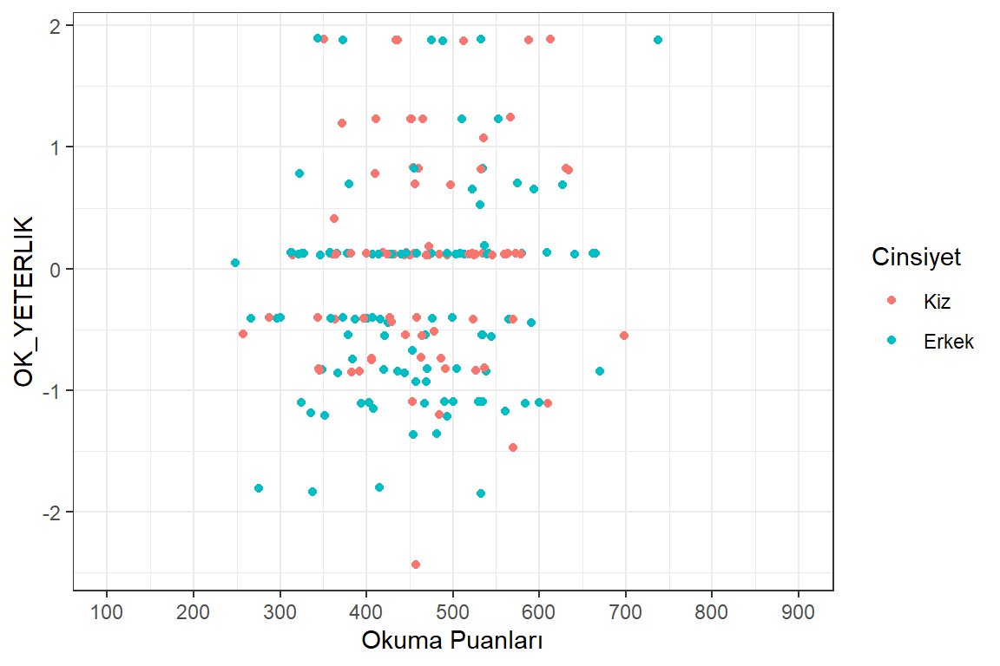
grafik1 adlı nesneye CINSIYET değişkenine göre şekil ekleme
## Warning: Removed 6 rows containing missing values (`geom_point()`).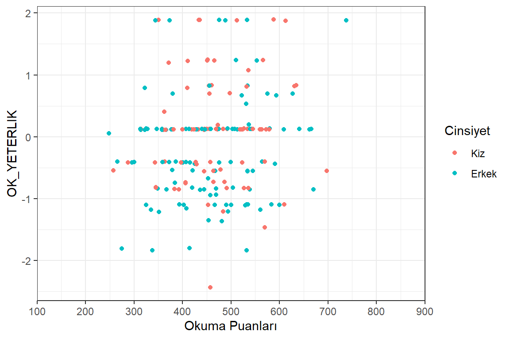
14.16 text
Değişken adları text komutu ile veri sembolu olarak eklenebilir. Gösterim amacıyla df veri setinin sadece ilk 10 satırı kullanılmıştır.
14.17 Scale
Scale functions - scale_x() - scale_y() - scale_color() - scale_fill() - scale_shape() - scale_linetype() - scale_size() - scale_x_continuous() - scale_y() - scale_color_discrete() - scale_fill() - scale_shape() - scale_linetype() - scale_size()
ggplot(df, aes(x = ODOKUMA1,
y = OK_YETERLIK,
color = CINSIYET)) +
geom_point(position = "jitter") +
scale_x_continuous("Okuma Puanları") +
scale_color_discrete("Cinsiyet")## Warning: Removed 6 rows containing missing values (`geom_point()`).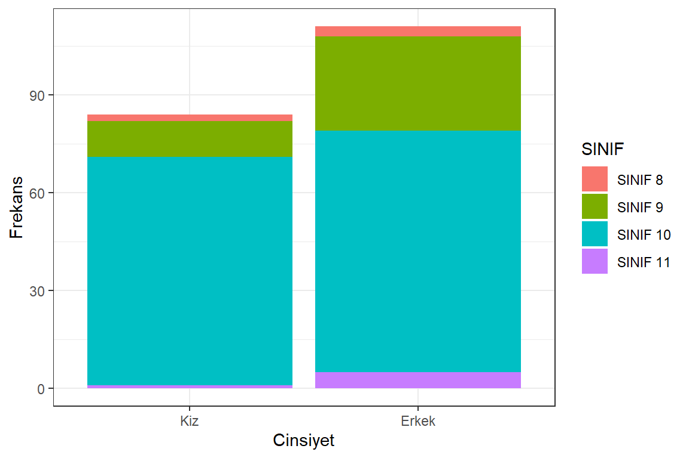
*limits**
ggplot(df, aes(x = ODOKUMA1,
y = OK_YETERLIK,
color = CINSIYET)) +
geom_point(position = "jitter") +
scale_x_continuous("Okuma Puanları",limits = c(100,900)) +
scale_color_discrete("Cinsiyet")## Warning: Removed 6 rows containing missing values (`geom_point()`).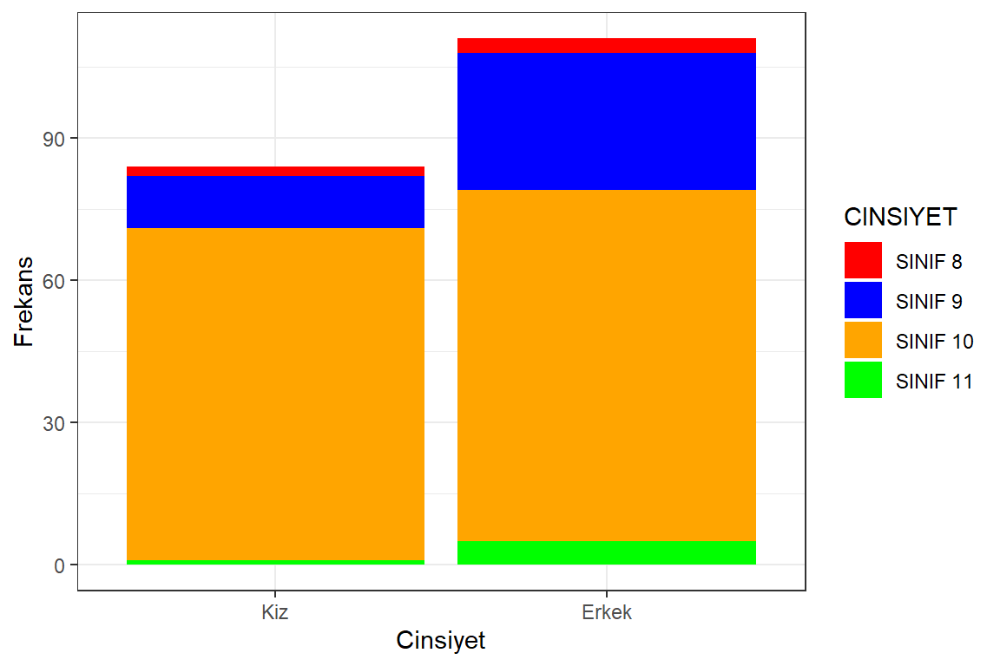
14.18 breaks
ggplot(df, aes(x = ODOKUMA1,
y = OK_YETERLIK,
color = CINSIYET)) +
geom_point(position = "jitter") +
scale_x_continuous("Okuma Puanları",limits = c(100,900),
breaks=seq(100,900,100)) +
scale_color_discrete("Cinsiyet")## Warning: Removed 6 rows containing missing values (`geom_point()`).
14.19 expand
ggplot(df, aes(x = ODOKUMA1,
y = OK_YETERLIK,
color = CINSIYET)) +
geom_point(position = "jitter") +
scale_x_continuous("Okuma Puanları",limits = c(100,900),
breaks=seq(100,900,100),
expand=c(0,0)) +
scale_color_discrete("Cinsiyet")## Warning: Removed 6 rows containing missing values (`geom_point()`).
14.20 labs
ggplot(df, aes(x = ODOKUMA1,
y = OK_YETERLIK,
color = CINSIYET)) +
geom_point(position = "jitter") +
labs(x = "\nBasari Puanları",
y = "\nYeterlik Puanları",
color = "Grup")## Warning: Removed 6 rows containing missing values (`geom_point()`).14.21 Bar Grafiği

14.22 scale_fill
14.23 Bar Grafikleri
dat <- PISA_STU_2018 %>%
group_by(ST004D01T) %>%
summarise(ort = mean(PV1READ),
sd = sd(PV1READ),
n = n()) %>%
ungroup()
ggplot(data = PISA_STU_2018, mapping = aes(x = ST004D01T)) +
geom_bar()## Don't know how to automatically pick scale for object of type
## <haven_labelled/vctrs_vctr/double>. Defaulting to continuous.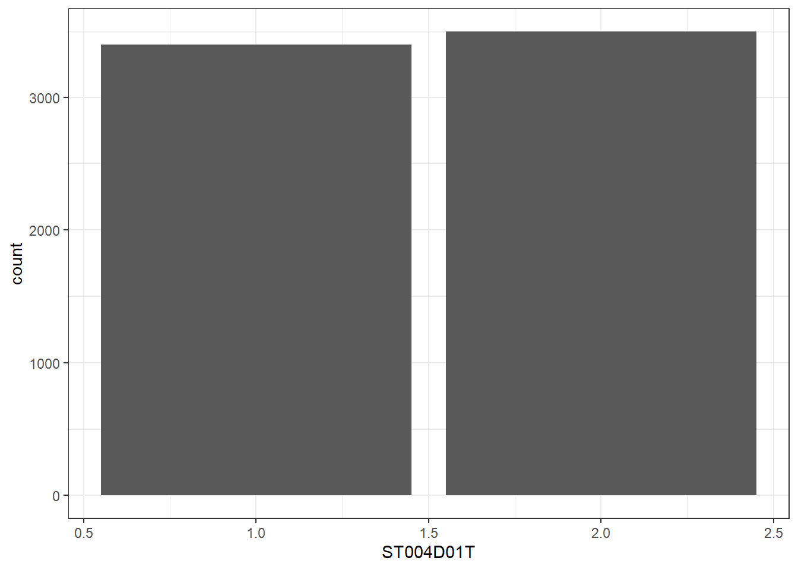
dat <- mutate(PISA_STU_2018, Cinsiyet = factor(
ST004D01T,
c(1, 2),
c("kiz", "erkek")
))
ggplot(data = dat, mapping = aes(x = Cinsiyet)) +
geom_bar()
ggplot(data = dat, mapping = aes(x = Cinsiyet)) +
geom_bar(aes(y = (..count..)/sum(..count..))) +
scale_y_continuous(name = "Yüzde", labels=scales::percent) ## Warning: The dot-dot notation (`..count..`) was deprecated in ggplot2 3.4.0.
## ℹ Please use `after_stat(count)` instead.
## This warning is displayed once every 8 hours.
## Call `lifecycle::last_lifecycle_warnings()` to see where this warning was
## generated.
- teşekkürler !
--
😕
🙋